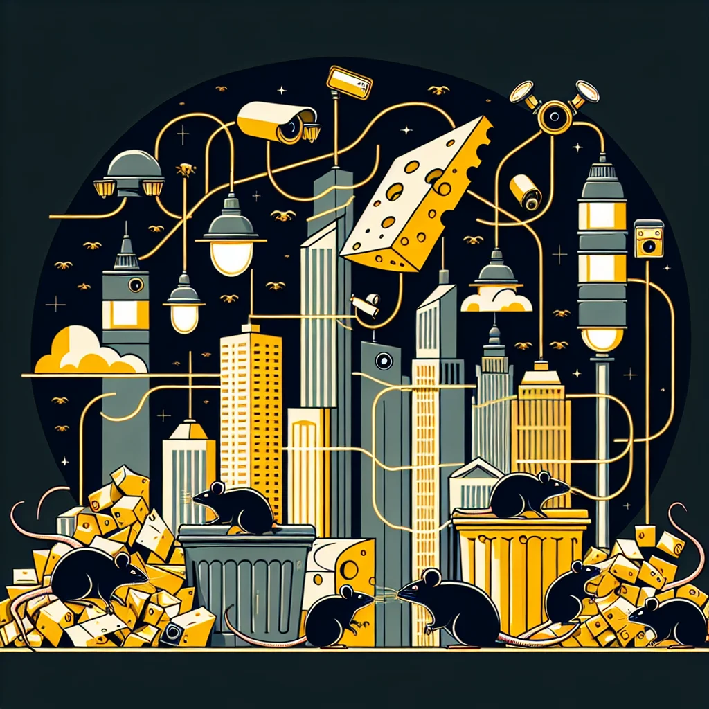

{kind=link}
{kind=link}
In a city where unseen threats lurk in the dark alleys and underground tunnels, the Ratopolis Intelligence Agency (RIA) operates in the shadows, using sophisticated surveillance techniques and counter-espionage measures to keep the bustling metropolis safe.
Founded shortly after the formation of Ratopolis, the RIA has evolved into an indispensable pillar of city security. Their mission? To detect and neutralize threats before they can gnaw away at the city's stability.
Surveillance is the cornerstone of the RIA's operations. Tiny cameras, hidden in nooks and crannies, gather crucial intel, while operative agents disguised as common city rats collect information first-hand. "Our work often goes unnoticed, but it's crucial for the safety of every rat in Ratopolis," says Agent Whiskers, a senior operative whose eyes glint with unwavering dedication.
Counter-espionage is equally essential. The RIA employs a myriad of strategies, from decoy operations to advanced encryption techniques, ensuring information integrity. Technological advancements such as micro-chip tracking and sonar communication have further elevated their capabilities.
Security strategies extend beyond counter-espionage. The RIA conducts detailed threat assessments, coordinating with other city agencies to implement robust mitigation measures. Historically, their swift actions have thwarted multiple plots against Ratopolis. "I always wondered how they kept the city so safe. It's like they have eyes everywhere!" exclaims Cheddar McSqueak, a local shop owner.
Behind the success stories, ethical considerations loom large. The balance between privacy and security is a tightrope walk. Public trust in the RIA is paramount, yet skepticism exists. "I used to think the RIA was just a myth, but now I see they're the real 'cheese' behind our security," admits Squeaky Clean, a resident who once doubted the agency's legitimacy.
Security experts argue that transparency and public engagement are crucial for maintaining trust. Wise Whiskerstein, a noted rat security expert, suggests, "Continuous dialogue with citizens and clear legal frameworks for surveillance can mitigate ethical concerns."
Despite the challenges, the future of the RIA looks promising. Ongoing investments in technology and potential policy reforms are on the horizon, aiming to ensure that Ratopolis remains one step ahead of any adversary. Potential strategies include enhanced digital encryption and bio-signal tracking.
Citizens can also play a part in this complex web of security. The RIA encourages residents to stay vigilant and report suspicious activities. Educational programs are in place to foster a community-wide sense of responsibility.
In a city forever on the cusp of new dangers, the Ratopolis Intelligence Agency stands as a silent guardian, tirelessly working to keep every whiskered resident safe. Their efforts, shrouded in secrecy, reveal a world where every rat has a role to play in the grand scheme of security.
As we unmask the layers of the RIA's operations, one truth becomes clear: city safety is a collective endeavor. The path forward lies in balancing surveillance with privacy, trust with transparency. Ratopolis residents must remain engaged and proactive to ensure their city's continued security.
In the end, the RIA's clandestine work underscores a poignant reality: the essence of safety rests not just in the hands of a few operatives, but in the collective vigilance of all Ratopolis citizens.
Looking for more in-depth news and exclusive content? Follow RAT TV for real-time updates, behind-the-scenes insights and the latest breaking news.
Operational Tactics: Unpacking the Secrets of the Ratopolis Intelligence Agency
The Ratopolis Intelligence Agency (RIA) operates in the shadows to protect the city from unseen threats through sophisticated surveillance and counter-espionage measures. This article explores their operations, ethical considerations, and the importance of public trust.
3 minute read •
Comments

Comments